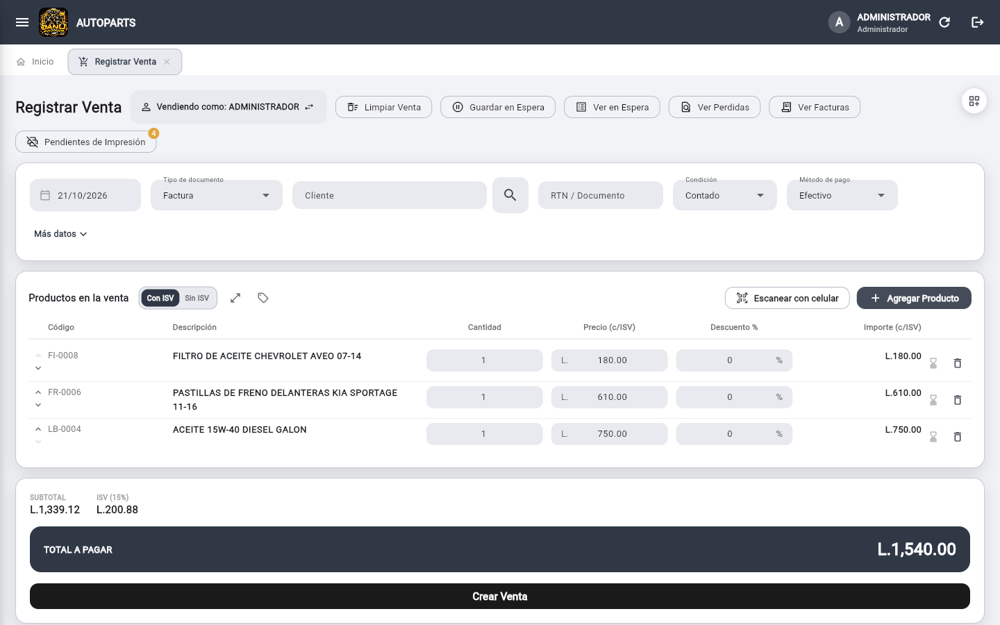

Manual de usuario
Autoparts
octubre de 2026
1Bienvenida
Autoparts es el sistema con el que el negocio registra ventas, compras, inventario, créditos, traslados entre sucursales y cierres de caja. Funciona en computadoras con Windows, en celulares y tabletas Android y desde el navegador web. Todos los equipos trabajan sobre la misma información: lo que se registra en uno aparece en los demás en pocos segundos.
Qué puede hacer con el sistema
- Vender con factura o con venta simple, hacer cotizaciones (con o sin ISV), ventas a crédito y pagos mixtos (parte en efectivo y parte con tarjeta o transferencia).
- Controlar el inventario con existencias, costos por lote, historial de movimientos y fotos de cada repuesto.
- Indicar para qué vehículos y años sirve cada repuesto y encontrarlo rápido buscando por marca, modelo y año.
- Mover mercadería entre sucursales con traslados que descuentan existencias y se pueden anular.
- Dar seguimiento a las cuentas por cobrar (clientes) y por pagar (proveedores).
- Abrir y cerrar la caja de cada cajero, con conteo de billetes, y registrar los egresos del negocio.
- Consultar reportes de ventas, compras, traslados y finanzas, y un Resumen del Día con todo lo que pasó en un periodo.
- Imprimir tickets en impresora térmica, también desde un celular o tableta pidiéndole a la caja principal que imprima.
Equipos y requisitos
| Equipo | Cómo se usa | Notas |
|---|
| Computadora con Windows 10 u 11 | Programa instalado desde el archivo RepuestosPOS.exe | Es el recomendado para la caja principal: es el que conecta la impresora de tickets. |
| Celular o tableta Android | Aplicación instalada desde RepuestosPOS.apk | Sirve para vender, consultar inventario y escanear códigos de barras con la cámara. |
| Navegador web | Dirección web del sistema (la entrega quien instaló el sistema) | Chrome, Edge o Safari actualizados. No necesita instalar nada. |
Todos los equipos necesitan internet. Si la conexión se interrumpe un momento, el sistema vuelve a intentar solo y avisa cuando una operación quedó pendiente (ver capítulo 15).
Cómo está organizado este manual
Los capítulos siguen el orden en que normalmente se empieza a trabajar: ingresar, configurar el negocio, crear usuarios, cargar inventario, vender y comprar, y por último los reportes. Al final hay una tabla de problemas frecuentes y un glosario con las palabras que usa el sistema.
Todas las imágenes de este manual son capturas reales del sistema. Los números rojos señalan la parte de la pantalla que se explica debajo de cada imagen.
ConsejoSi es la primera vez que usa el sistema, lea los capítulos 2, 3 y 4 antes de registrar la primera venta. Con eso quedan listos el negocio, los usuarios y los permisos.
2Primeros pasos
Ingresar al sistema
Al abrir el programa aparece primero una pantalla negra con el logo y la barra «Cargando el sistema…», y enseguida la pantalla de ingreso. Cada persona entra con su código de acceso (el que le asignó el administrador) y su contraseña.
1234
Pantalla de ingreso en computadora.
- Escriba su código de acceso.
- Escriba su contraseña. Si se equivoca varias veces seguidas, la cuenta se bloquea 5 minutos por seguridad.
- El ojo muestra u oculta la contraseña mientras la escribe.
- Presione Ingresar (o Enter).
En celulares y tabletas la misma pantalla se acomoda en una sola columna. En equipos compatibles, el celular puede recordar la huella o Face ID para entrar sin escribir la contraseña.
Ingreso (izquierda) e inicio (derecha) en un celular. 1: código de acceso. 2: contraseña. 3: botón Ingresar. En el inicio: 1: botón del menú. 2: refrescar y cerrar sesión. 3: venta del día.
ImportanteCada persona debe usar su propio usuario. Así los reportes muestran quién hizo cada venta, compra o ajuste de inventario.
La pantalla principal
Después de ingresar se muestra el Inicio: arriba el saludo y la venta de hoy y del mes; en el centro un acceso directo por cada módulo al que su usuario tiene permiso; y abajo, solo para el administrador, el Panel del dueño con las ventas de la semana y el ticket promedio.
Inicio, desplazado hacia abajo para ver los módulos y el Panel del dueño.
- Menú. Abre la lista de módulos. Los que no aparecen son los que su usuario no tiene permitidos.
- Pestañas. Cada pantalla se abre en una pestaña propia; puede tener varias a la vez.
- Refrescar. Solo en la versión web: vuelve a cargar el sistema y limpia lo guardado en el navegador, como Ctrl+F5.
- Cerrar sesión.
- Módulos. Un recuadro por módulo, con la cantidad de opciones que tiene.
- Panel del dueño (solo administrador): ventas de la semana, ticket promedio y la gráfica de los últimos 7 días.
El menú
Menú abierto, con el módulo Ventas desplegado.
- Título del menú.
- Módulo. Los que tienen varias pantallas se despliegan al tocarlos.
- Pantalla dentro del módulo: al tocarla se abre en una pestaña nueva.
- Cierra el menú.
Trabajar con varias pestañas
Cada pestaña es independiente: puede dejar una venta a medias en una pestaña, abrir el inventario en otra para consultar una existencia y volver a la venta sin perder nada. Lo que escribe o busca en una pestaña no se refleja en las demás, aunque sean del mismo módulo.
- Para abrir una pantalla, toque su nombre en el menú.
- Para cerrar una pestaña, use la x de su etiqueta.
- Una ventana que se abre dentro de una pestaña (por ejemplo, Buscar Producto) solo afecta a esa pestaña; las demás se pueden seguir usando.
- En el celular el menú se abre con el botón de las tres rayas.
Cerrar sesión
Use el botón de salir, arriba a la derecha. Hágalo siempre que otra persona vaya a usar el equipo.
3Configuración del negocio
Antes de vender, el administrador debe completar los datos del negocio. Todo se hace en Mantenedor ▸ Configuración. La pantalla es larga: se recorre hacia abajo y cada bloque es una tarjeta. Los cambios se aplican a todos los equipos.
Datos del negocio y logo
Primera tarjeta de Configuración: datos del negocio.
- Logo. Suba solo el logo normal: el sistema lo convierte solo a blanco y negro cuando hace falta para el ticket. «Cambiar logo» lo reemplaza y «Quitar logo» lo borra.
- Interruptores para incluir el logo en el ticket impreso y en la factura en PDF.
- Nombre, RTN, dirección y teléfono. Salen impresos en los tickets y facturas.
- Correo y CAI (código de autorización de impresión).
- Rango autorizado de facturas (prefijo, desde y hasta) y, más abajo, la fecha límite de emisión.
Después de llenar los datos presione Guardar cambios, al final de la tarjeta. Si el negocio emite facturas con CAI, complete el rango y la fecha límite: el sistema numera las facturas en orden y respeta ese rango. Las ventas simples (sin facturar) no imprimen CAI, rango ni fecha límite; eso sale solo en las facturas.
Acceso de permisos especiales (clave especial)
Tarjeta de permisos especiales.
- Escriba aquí la clave especial.
- Guardar clave la crea o la cambia; Quitar clave la elimina.
- Indica si ya hay una clave activa.
- Cada interruptor marca una acción para la que se pedirá la clave. Apagado significa que no se pide.
La clave especial es una segunda clave, conocida solo por el administrador, que el sistema pide antes de acciones delicadas. Los interruptores cubren estas acciones: editar productos y cambiar existencias en Inventario, eliminar créditos, cambiar el precio o la descripción de un producto dentro de una venta, vender un producto sin existencia, registrar, editar y anular compras, crear y eliminar productos, crear, editar y eliminar clientes, anular ventas, anular traslados y editar el fondo inicial de una caja abierta. El detalle de a quién se le pide y a quién no está en el capítulo 4.
Impresoras
Tarjeta de impresoras (vista en el navegador).
- Ancho del ticket: 58 mm (32 columnas) u 80 mm (48 columnas). Afecta la impresión real y la vista previa.
- Impresora térmica (recibos). En el programa de Windows se elige aquí la impresora instalada. En el navegador la lista no está disponible, y la pantalla lo explica.
- Impresora de etiquetas (opcional): si no se elige, las etiquetas salen por la impresora de recibos.
- Imprimir directo, sin preguntar: al confirmar una venta se imprime sin mostrar vista previa.
- Impresora especial (Star u otra que no imprime bien directo): se manda el ticket por el controlador de Windows. Actívelo solo si la impresora saca papel de más sin cortar o el texto sale raro.
Parte final de la tarjeta de impresoras.
- Impresora térmica de red: para vender desde el celular con una impresora conectada por WiFi, se escribe aquí su dirección IP. No está disponible en la versión web.
- Imprimir ticket de prueba: genera un ticket sin registrar ninguna venta. Úselo para comprobar la impresora.
Apariencia y documento por defecto
1234
Colores del sistema y documento que aparece primero al vender.
- Nueve colores listos para elegir. El marcado con la palomita es el actual.
- Elegir otro color (RGB) abre una ventana con muestras, tres barras (rojo, verde y azul) y un campo para escribir un código como
#1F5F46. - Restablecer vuelve al color original.
- Factura o Venta: el documento con el que empieza cada venta nueva. Siempre se puede cambiar dentro de la venta.
El color se aplica a todo el sistema y en todos los equipos; al cambiarlo, las ventanas abiertas se refrescan. Elija un color medio u oscuro: con colores muy claros el texto blanco de los botones se lee mal.
| Documento | Qué hace |
|---|
| Factura | Muestra el ISV (15%) desglosado y usa la numeración con CAI. El precio del inventario ya es el precio final: en la factura el sistema separa el ISV de ese precio, no se lo suma encima. |
| Venta | Venta simple, sin factura y sin ISV. Se imprime como ticket de venta y tiene su propia numeración. |
| Cotización sin ISV | Da un precio al cliente sin desglosar impuesto. No descuenta existencias ni suma a las ventas. |
| Cotización con ISV | Igual que la anterior, pero el precio se muestra desglosado con ISV, como una factura. |
Factura: qué se imprime y numeración
- Imprimir facturas automáticamente: interruptor general. Apagado, al confirmar una venta no se intenta imprimir nada, sin importar lo demás.
- Imprimir copia además del original: apagado, cada venta sale solo con la hoja ORIGINAL y se ahorra papel.
- Imprimir copia del recibo de abono: encendido, cada recibo de abono (de clientes y de proveedores) sale primero como ORIGINAL y después como COPIA, ambos con línea de firma. Apagado, sale solo el original.
- Mostrar precios con ISV incluido: el precio de cada línea del ticket se muestra con el impuesto incluido. El total y el desglose de ISV no cambian.
- Numeración de facturas: el número que le toca a la próxima factura. Sirve para continuar un talonario físico o para volver a empezar desde 1 después de vaciar los datos de prueba.
- Guardar aplica el número.
Otras pantallas del Mantenedor
- Dispositivos lista los equipos que usan el sistema, su versión y su última conexión, y permite marcar la PC principal (capítulo 13).
- Face ID / huella permite que cada persona entre sin escribir su contraseña en su propio dispositivo.
4Usuarios, roles y permisos
Los usuarios se crean y se editan en Usuarios. Esta pantalla solo la ve el administrador.
- Buscador por nombre o por código de acceso.
- Refrescar vuelve a cargar la lista.
- Nuevo Usuario abre el formulario.
- Cada fila muestra nombre, código, rol y estado. Al tocarla se abre para editar.
Crear un usuario
Formulario de Nuevo Usuario con el rol Encargado.
- Código de acceso: con él entra la persona al sistema.
- Nombre completo: es el que aparece en ventas, recibos y reportes.
- Contraseña. Al editar un usuario existente el campo dice «Nueva contraseña (opcional)»: se llena solo si se quiere cambiarla.
- Rol: Administrador, Semi Administrador, Empleado o Encargado.
- Con el rol Encargado (y para ajustar un Empleado) aparece la lista de pantallas permitidas, una casilla por pantalla del menú.
La lista de acciones permitidas, más abajo en el mismo formulario.
- Acciones permitidas: los botones de crear, editar, eliminar o anular que la persona podrá usar.
- Acciones que normalmente piden la clave especial (editar productos, cambiar existencias, eliminar créditos…). Si se marcan, esa persona las hace sin escribir la clave.
- Permisos de compras, productos, clientes, ventas y traslados.
Para desactivar a alguien que ya no trabaja en el negocio no se elimina su usuario (para conservar el historial): se abre y se apaga el interruptor Estado. Ya no podrá ingresar. El botón del bote de basura, abajo a la izquierda del formulario, elimina el usuario.
Roles
| Rol | Qué puede hacer |
|---|
| Administrador | Todo: configuración, usuarios, inventario, reportes financieros, anulaciones. Nunca se le pide la clave especial. |
| Semi Administrador | Casi todo lo operativo. No entra a las pantallas reservadas al administrador (por ejemplo Usuarios o Configuración). |
| Empleado | Por defecto: Registrar Venta, Ver Detalle de ventas, Clientes, Proveedores y Créditos. Se puede ajustar pantalla por pantalla. |
| Encargado | Rol a la medida: el administrador marca exactamente qué pantallas ve y qué acciones puede hacer. |
Cómo funciona la clave especial
La clave especial se crea en Configuración ▸ Acceso de permisos especiales, donde también se enciende o apaga, una por una, cada acción que la pide. Cuando alguien intenta una acción protegida:
| Quién | Qué pasa |
|---|
| Administrador | Nunca se le pide. |
| Encargado | Si el administrador le marcó esa acción en «Acciones permitidas», la hace sin clave. Si no, se le pide la clave. |
| Empleado y Semi Administrador | Si la acción está encendida en Configuración y existe una clave especial, se les pide. Si está apagada, la hacen directo. |
CuidadoLa clave especial no debe compartirse con los empleados. Si alguien la conoce y no debería, cámbiela en Configuración.
Por defecto el sistema no deja vender un repuesto sin existencia: muestra un aviso y no lo agrega. Solo si el administrador activa «Permitir vender un producto sin existencia (con clave)» y existe una clave especial, se podrá agregar pidiendo la clave.
ConsejoCree un usuario Encargado para quien atiende el mostrador: marque «Registrar Venta», «Clientes» y «Ver Detalle» y deje sin marcar las anulaciones. Así vende sin riesgo de anular documentos.
5Inventario y vehículos compatibles
El inventario está en Mantenedor ▸ Inventario. Allí se ven todos los repuestos con su código, nombre, categoría, ubicación, existencia y precios. La lista se guarda en el equipo, por lo que abre al instante aunque haya miles de repuestos; los cambios hechos desde otros equipos llegan solos en segundos.
Al abrir la pantalla la lista aparece vacía con el mensaje «Escribí algo y presioná buscar»: escriba lo que busca, o elija Mostrar todos en el selector de vista.
Inventario después de buscar «FILTRO».
- Cantidad de productos y valor del inventario a precio de compra y a precio de venta. A la derecha, el cambio entre productos Activos e Inactivos.
- Vista: Productos filtrados (lo que usted busca), Mostrar todos o Bajo existencia.
- Filtrar por: dónde buscar el texto: Todo, Código, Código de barras, Nombre, Descripción o Categoría.
- Búsqueda por texto o escaneando un código de barras; presione Enter o la flecha.
- Filtro por vehículo y año: se aplica junto con el texto al presionar Enter.
- Exportar a Excel o PDF, imprimir un ticket con la lista y las etiquetas con código de barras.
- Nuevo Producto (si su usuario tiene permiso).
- Menú de acciones de cada repuesto.
Las columnas Código, Nombre, Existencia, Precio de venta y Precio de compra se pueden ordenar tocando su encabezado. La existencia baja aparece en rojo y la normal en azul. Los nombres de los repuestos se ven siempre completos, sin cortarse con «…».
Buscar un repuesto
El buscador es estricto: cada palabra que escribe debe aparecer en el código, el nombre, la descripción o los vehículos del repuesto. Si escribe disco civic, solo salen repuestos que tengan las dos palabras. El código se puede escribir sin guiones ni espacios, y el código exacto aparece primero.
Buscar con lector o con la cámara
Al escanear un código de barras, con una pistola lectora o con la cámara del celular, el sistema busca el repuesto aunque el código llegue con espacios, ceros de más o de menos, guiones o el dígito verificador distinto. Si el código está en la ficha como 0012345 y el lector manda 12345, igual lo encuentra. Funciona igual en Inventario, Registrar Venta, Registrar Compra y Auditoría de Inventario.
Buscar por vehículo y año
Junto al buscador hay dos campos: Vehículo (marca y/o modelo, por ejemplo toyota hilux) y Año (por ejemplo 2012 o 12). Presione Enter para aplicarlos. El resultado muestra los repuestos compatibles con ese vehículo en ese año; los que sirven para el vehículo pero no tienen años registrados salen al final, para no esconder un repuesto que quizá sirva.
ConsejoPuede usar solo el vehículo, solo el año, o combinarlos con el texto: «pastillas» + «hilux» + «2012» deja únicamente las pastillas que sirven para una Hilux 2012.
El mismo filtro está en la ventana Buscar Producto de ventas, compras, pedidos y traslados.
Menú de cada repuesto
Menú de los tres puntos de la primera fila.
- Editar producto: abre la misma ficha que Nuevo Producto con los datos del repuesto.
- Ajustar existencia: suma o resta unidades (ver más abajo).
- Historial de existencia: todos los movimientos del repuesto.
- Código de barras: imprime etiquetas con el código del repuesto, de la cantidad que indique.
Crear un repuesto nuevo
Presione Nuevo Producto (si su usuario tiene permiso). Se abre la ficha del repuesto:
Ficha de un repuesto nuevo con dos vehículos compatibles. El nombre se está armando solo.
- Foto (opcional). Se sube a internet y se ve en las búsquedas.
- Código y código de barras. Si deja el código vacío, el sistema genera uno; no puede repetirse. El código de barras se puede escanear con el icono.
- Nombre. Escriba el nombre base; con «Armar el nombre automáticamente» encendido, el sistema le agrega los vehículos.
- Vehículos compatibles (opcional): interruptor para usar la lista de vehículos.
- Una fila por vehículo: marca, modelo, año desde y año hasta. La X de la derecha quita la fila; «Agregar vehículo» agrega otra.
- Armar el nombre automáticamente: pone al final del nombre los vehículos compatibles. Apáguelo si prefiere escribir todo el nombre a mano.
- Es un combo/kit: para vender varios repuestos juntos con un solo precio.
- Existencia inicial, precio de compra y precio de venta. «Niveles de precio adicionales» agrega hasta dos precios más (mayorista, taller).
- Estado: activo o inactivo. Los inactivos no aparecen para vender.
Debajo, con el desplazamiento de la ventana, siguen Descripción (opcional), Ubicación física (opcional; por ejemplo «PASILLO 2 - ESTANTE B», se muestra en las búsquedas y en los traslados) y Categoría (obligatoria).
| Campo | Qué escribir |
|---|
| Código | Código interno o del fabricante. Si lo deja vacío, el sistema genera uno. No puede repetirse. |
| Código de barras | Escanéelo con la cámara o con lector. Si lo deja vacío, se genera uno interno. |
| Nombre | Nombre del repuesto. Puede escribirse a mano o armarse solo con los vehículos. |
| Descripción | Marca del fabricante u otra nota (opcional). |
| Ubicación física | Dónde está en la bodega (opcional). En los traslados se usa esta ubicación. |
| Categoría | Obligatoria. Las categorías se crean en Mantenedor ▸ Categorías. |
| Existencia inicial | Cuántas unidades hay hoy. Se crea el primer lote de costo con el precio de compra. |
| Precio de compra | Lo que le cuesta cada unidad. |
| Precio de venta (hasta 3 niveles) | Precio normal y, si lo necesita, dos precios alternativos. En una venta se elige con qué nivel buscar. |
Reglas del nombre automático
- La marca solo se repite cuando cambia:
TOYOTA HILUX 05-15, FORTUNER 09-UP, NISSAN FRONTIER.
- Los años se muestran como
05-15, 09-UP (en adelante) o 12 (un solo año).
- Si hay más de tres vehículos se agrega
+N al final; la lista completa queda guardada y la búsqueda por vehículo la usa completa.
- Una fila de vehículo que todavía no tiene años no se agrega al nombre hasta completarse.
- Los repuestos que ya existían sin vehículos siguen funcionando: el filtro por vehículo intenta leer las marcas y años que estén escritos en su nombre.
Ajustar existencias
Ajustar Existencia de un repuesto con 12 unidades.
- Ingreso suma unidades; Salida resta unidades.
- Cantidad que ingresa o sale.
- Costo unitario de lo que ingresa (en un ingreso se crea un lote de costo nuevo). En una salida puede elegir de qué lote sale o dejar que el sistema use el más antiguo primero.
- Motivo (opcional): queda escrito en el historial.
- Guardar. Si la clave especial está activada para esta acción, se la pedirá antes.
Todo ajuste queda en el historial de existencias con fecha, usuario y motivo.
Historial de existencia
Desde el menú del repuesto se abre una sola ventana con todo lo que movió sus existencias, separado en pestañas. Se actualiza al instante: si alguien anula una venta, el movimiento aparece de inmediato.
Historial de existencia de un repuesto.
- Pestañas: Movimientos (todo junto), Ventas, Compras, Traslados, Ajustes manuales y Lotes de costo.
- Filtro de fechas Desde y Hasta.
- Tipo de movimiento: Venta, Anulación de venta, Traslado, etc. Un traslado se muestra como «Traslado» y al tocarlo se ve su detalle.
- Existencia anterior, nueva y cambio, con el motivo (por ejemplo «Venta 0277»).
- Usuario que hizo el movimiento.
En la pestaña Lotes de costo se ven los lotes con su cantidad restante; cada compra o ingreso crea un lote con su costo. Al vender, el sistema descuenta de los lotes más antiguos primero y calcula el costo real de la venta, así la utilidad de los reportes es exacta.
Importar y exportar
Ventana de Exportar a PDF.
- Columnas que saldrán en el PDF; toque para activar o quitar.
- Productos que se incluyen: todos los de la búsqueda, con casillas para quitar los que no quiera.
- Exportar genera el PDF; también se puede guardar o compartir.
- Importar: carga o actualiza muchos repuestos desde un archivo de Excel. El sistema crea las categorías que falten y actualiza los repuestos cuyo código ya existe.
- Excel y PDF: exportan la lista que está viendo.
- Etiquetas: imprime etiquetas con el código de barras de los repuestos de la lista.
Opciones del ticket de inventario.
- Qué datos incluir de cada repuesto: código, descripción, categoría, existencia, precio de venta y precio de compra.
- Continuar muestra la vista previa y permite imprimirla.
El ticket del inventario sale en impresora térmica con el nombre de cada repuesto partido en varias líneas, de modo que nunca queda cortado.
Auditoría de inventario
- Categoría a auditar: elija la categoría que va a contar.
- Busque o escanee cada repuesto para registrar lo que hay físicamente.
La auditoría sirve para comparar las existencias del sistema con un conteo físico y ver las diferencias. Si escanea un repuesto, la categoría se elige sola.
Pendientes de reposición
Pendientes de Reposición cuando no hay ninguno.
- Aquí aparecen las ventas anticipadas que esperan la compra que las repone. Se completan solas al registrar esa compra.
Categorías
- Buscador por descripción.
- Nueva Categoría.
- Cada fila muestra la categoría y su estado. Al tocarla se edita.
Cada categoría puede controlar existencias o no: las que no controlan existencias (por ejemplo, servicios o mano de obra) se pueden vender siempre.
Descuentos y promociones
En Mantenedor ▸ Descuentos y Promociones se crean las ofertas. La lista muestra por defecto solo las vigentes.
- Nombre de la promoción.
- Tipo de promoción: % Descuento, Precio Fijo, Combo por Cantidad, Combo de Productos o Regalo.
- El valor que pide el tipo elegido (aquí, el porcentaje de descuento).
- Elegir productos a los que aplica.
- Vigencia: fecha de inicio y, si se quita la casilla «Sin fecha de fin», fecha de fin.
- Condición de la venta: Todos, Contado o Crédito.
- Método de pago: se pueden elegir varios. Ambos filtros son independientes: tienen que cumplirse los dos para que la promoción se aplique.
En Registrar Venta el botón Ver promociones vigentes (el icono de etiqueta) muestra las que aplican.
6Clientes y proveedores
Clientes
En Clientes se registran las personas y empresas a quienes se vende. No es obligatorio registrar al cliente antes de vender: puede escribir su nombre en la venta y el sistema lo crea solo.
Lista de clientes después de buscar «MECANICA».
- Vista: Clientes filtrados o Mostrar todos.
- Buscador por DNI, nombre, dirección o teléfono.
- Nuevo Cliente (si su usuario tiene permiso).
- Menú de cada cliente: Ver detalle, Editar y Eliminar.
Ventana de Nuevo Cliente.
- DNI o RTN (opcional). No se pueden repetir; si intenta registrar uno repetido el sistema avisa.
- Nombre completo.
- Dirección y teléfono (opcionales).
- Estado: activo o inactivo.
Detalle del cliente
Detalle de un cliente con crédito vencido.
- Datos del cliente: DNI, teléfono y estado.
- Seguimiento de crédito: si hay crédito vencido, un aviso con el monto.
- Historial de créditos del cliente: cada factura con su fecha, vencimiento, saldo y estado (Vigente, Vencida o Liquidada).
- Puntualidad histórica de pago: cuántos créditos pagó a tiempo.
- Resumen de compras: total comprado, cantidad de compras, ticket promedio, cliente desde y última compra.
Proveedores
En Proveedores se registran las empresas a quienes se compra. Se usan al registrar compras y créditos con proveedores.
- Vista: Proveedores filtrados o Mostrar todos.
- Buscador por RTN, razón social, correo o teléfono.
- Nuevo Proveedor.
- Menú de cada proveedor: Editar o Eliminar.
Ventana de Nuevo Proveedor.
- RTN (opcional).
- Razón social.
- Correo electrónico (opcional).
- Teléfono (opcional).
- Estado: activo o inactivo.
7Ventas
La venta se registra en Ventas ▸ Registrar Venta. La pantalla se adapta al tamaño del equipo. Arriba a la derecha hay un botón para cambiar la vista: Clásica, Dividida (buscador y carrito lado a lado) o Tabla grande. La vista elegida se recuerda.

123456789101112Registrar Venta con tres repuestos agregados (vista clásica).
- Vendiendo como: el usuario al que se le registra la venta. Se puede cambiar.
- Botones: Limpiar Venta, Guardar en Espera, Ver en Espera, Ver Perdidas y Ver Facturas.
- Pendientes de Impresión, con un contador amarillo cuando hay tickets sin imprimir.
- Fecha, tipo de documento, cliente, RTN o documento, condición (contado o crédito) y método de pago.
- Más datos: campos poco frecuentes (descuento global, O/C exenta, registro de exonerado, SAG, observaciones y envío).
- Con ISV / Sin ISV: muestra los precios de cada línea con o sin impuesto. No cambia el total.
- Ver la tabla más grande en una ventana completa.
- Escanear con celular: usa el celular como lector de códigos (capítulo 14).
- Agregar Producto abre el buscador de repuestos.
- Cada línea: código, descripción, cantidad, precio y descuento. Los iconos de la derecha marcan la línea como venta anticipada o la quitan.
- Subtotal, ISV y total a pagar.
- Crear Venta registra la venta.
Registrar una venta paso a paso
1
Elija el tipo de documento.Factura muestra el ISV desglosado; Venta es un ticket simple sin ISV; Cotización puede ser «sin ISV» o «con ISV» y no descuenta existencias.
2
Busque los repuestos.Presione Agregar Producto y escriba lo que busca. Para un vehículo concreto, llene los campos Vehículo y Año y presione Enter. Haga doble clic en el repuesto (o selecciónelo y presione Enter) para agregarlo.
3
Ajuste cantidades y descuentos.Puede aplicar un descuento a una línea o un descuento general a toda la venta (en «Más datos»).
4
Indique el cliente (opcional).Escriba el nombre o use la lupa para buscarlo. Para facturas conviene registrar el RTN.
5
Elija cómo paga.Efectivo, tarjeta, transferencia, cheque o mixto. En efectivo escriba con cuánto paga y el sistema muestra el cambio.
6
Presione Crear Venta.La venta recibe su número, descuenta las existencias y se imprime el ticket o la factura según la configuración.
Tipo de documento y forma de pago
Opciones de tipo de documento.
- Factura, Venta, Cotización sin ISV y Cotización con ISV.
Opciones de método de pago.
- Efectivo, Tarjeta, Transferencia, Cheque y Mixto.
| Forma | Cómo se usa |
|---|
| Efectivo | Escriba «Paga con» y el sistema calcula el cambio. |
| Tarjeta / Transferencia / Cheque | Se registra el total completo con ese método. |
| Mixto | Divide el total entre varios métodos (por ejemplo, L 2,000 en efectivo y el resto con tarjeta). El cierre de caja reparte cada parte en su método. |
| Crédito | Cambie la condición a Crédito: no se cobra nada ahora, se pide fecha de vencimiento y un teléfono para avisos, y la venta queda en Ventas Crédito. |
Buscar repuestos al vender
Buscar Producto, con «FILTRO» escrito y el primer resultado resaltado.
- Texto de búsqueda (todas las palabras deben aparecer). Enter busca.
- Filtro por vehículo y año.
- Productos o Combos.
- Con qué precio se agrega el repuesto: Precio 1, 2 o 3.
- Producto Nuevo: crea el repuesto desde aquí mismo.
- El resultado resaltado. Doble clic, o Enter con la lista seleccionada, lo agrega a la venta. Si el texto es un código de barras exacto y hay un solo resultado, se agrega solo.
- Existencia (verde: hay; rojo: poca o ninguna). Se puede ordenar tocando el encabezado.
- Lápiz para editar el repuesto sin salir de la venta.
Las flechas ↑ ↓ mueven la selección y la tecla Esc cierra la ventana. En un celular o tableta, al buscar se baja el teclado para ver los resultados.
Sin existenciaPor defecto, un repuesto que no tiene existencia NO se puede agregar a una venta: el sistema muestra un mensaje y no lo deja seleccionar. En una cotización sí se puede, porque no descuenta existencias. Solo si el administrador activó «Permitir vender un producto sin existencia (con clave)» en Configuración y existe clave especial, se podrá agregar pidiendo esa clave.
Cómo se calcula el ISV: el precio del inventario es el precio final
El precio que usted guarda en el inventario es lo que paga el cliente. El sistema nunca le suma 15% encima. Lo que hace depende del tipo de documento:
| Documento | Qué se ve en los totales | Ejemplo con un repuesto de L 1,150.00 |
|---|
| Venta / Cotización sin ISV | Solo el total (y los descuentos, si los hay). No hay filas de ISV. | Total L 1,150.00 |
| Factura / Cotización con ISV | Subtotal, Descuentos y rebajas (si hay), ISV 15% y Total a pagar. El ISV se separa del precio. | Subtotal L 1,000.00 + ISV L 150.00 = Total L 1,150.00 |
Si cambia el tipo de documento a mitad de la venta, el total no cambia: solo cambia la forma de mostrarlo. En la factura, las columnas se llaman «Precio (c/ISV)» e «Importe (c/ISV)».
Descuentos y rebajas
Cada línea puede llevar un descuento en porcentaje, y toda la venta puede llevar un descuento general. Las promociones (por ejemplo precio fijo o combos) también rebajan el precio. Cuando hay cualquier descuento, en los totales aparece la fila Descuentos y rebajas con el monto total que se le rebajó al cliente, y el subtotal se muestra antes del descuento. Esto se ve igual en Venta, Cotización y Factura.
Más datos y envío
Sección «Más datos» desplegada.
- Descuento global (%) sobre toda la venta.
- Número de orden de compra exenta.
- Registro de exonerado.
- Registro SAG.
- Observaciones: se imprimen en la factura.
- Es envío: si la mercadería se envía, aquí se anotan nombre, dirección y teléfono del destinatario para imprimir la guía.
Ventas en espera, perdidas y facturas
- Guardar en Espera: aparta la venta (y reserva las existencias) para continuar después. Útil cuando el cliente va a buscar el dinero o decidir. Ver en Espera lista las guardadas; elija una para retomarla o eliminarla (se liberan las existencias).
- Ver Perdidas: el sistema guarda solo cada venta en curso; si se cerró la pestaña o se fue la luz, aquí se recuperan.
- Ver Facturas: lista de las ventas del periodo, para abrir una rápidamente.
Facturas Perdidas: ventas que quedaron a medias.
- Cada venta a medias con su tipo, cantidad de productos, total y hora. Tóquela para retomarla.
- El bote de basura la descarta. Estas ventas no reservan existencias.
- Rangos rápidos: Hoy, Ayer, Semana, Mes y Trimestre.
- Fechas Desde y Hasta.
- Buscador por número, cliente o método.
- Filtros por estado y por tipo de documento.
- Lista de ventas. Tocar una abre su detalle.
Cotizaciones
En el selector de documento elija Cotización sin ISV o Cotización con ISV para dar un precio. Con ISV, los totales se muestran desglosados como en una factura; sin ISV, solo el total. No descuenta existencias ni suma a las ventas, y el sistema permite agregar repuestos aunque estén agotados. Más tarde, desde Ver Detalle, el botón Convertir a venta la transforma en venta real (el precio se conserva igual).
Tabla grande
La vista Tabla grande pone el carrito a pantalla completa y reduce los controles a una sola barra.
- Cliente de la venta y datos del documento.
- Agregar Producto, escáner y promociones.
- Con ISV / Sin ISV.
- Guardar en Espera, Ver en Espera, Ver Perdidas y Ver Facturas.
- Pendientes de Impresión.
- Botón para cambiar de vista.
- Líneas de la venta.
- Total a pagar y Crear Venta en la barra inferior.
Registrar ventas desde el celular o la tableta
En un celular, las mismas secciones se apilan en una sola columna y toda la pantalla se desplaza junta.
Registrar Venta y Buscar Producto en un celular. En Registrar Venta: 1 vendedor, 2 botones de acciones, 3 pendientes de impresión, 4 datos del documento, 5 más datos. En Buscar Producto: 1 búsqueda, 2 vehículo y año, 3 productos o combos, 4 nivel de precio, 5 producto nuevo, 6 resultado.
Izquierda: venta con un repuesto agregado. 1 datos del documento, 2 más datos, 3 Agregar Producto, 4 Con ISV o Sin ISV, 5 línea del repuesto. Derecha: Tabla grande. 1 cliente, 2 Con ISV y Sin ISV, 3 barra de atajos que se desliza hacia los lados (Guardar en Espera, Ver en Espera, Pendientes de Impresión…), 4 contador de pendientes, 5 cambiar de vista, 6 total y Crear Venta.
ConsejoEn «Tabla grande» del celular, la barra de atajos se desliza hacia los lados: pase el dedo sobre ella para llegar a Ver Facturas, Ver Perdidas y Limpiar Venta. En la ventana ampliada «Productos en la venta» esos mismos atajos aparecen debajo del título.
Ver detalle, reimprimir y anular
En Ventas ▸ Ver Detalle escriba el número del documento y presione Buscar. El detalle abre al instante y muestra los datos del documento, las líneas y los totales.
- Número de documento a buscar.
- Filtro por tipo de documento.
- Buscar y Limpiar.
- Tipo, número, fecha, quién atendió, cliente, documento del cliente, condición, método de pago y estado.
- Productos de la venta con cantidad, precio e importe.
- Con ISV / Sin ISV.
- Subtotal, ISV y total.
- Acciones: Reimprimir, Descargar PDF, Generar guía de envío, Duplicar venta y Anular Venta.
- Reimprimir el ticket o la factura (como copia o como original).
- Duplicar la venta para repetirla.
- Convertir a venta si es una cotización.
- Anular la venta (según permisos): devuelve las existencias al lote del que salieron, cancela el crédito si no tiene abonos y deja constancia del motivo.
CuidadoUna venta anulada no se puede reactivar. Si anuló por error, registre una venta nueva.
En el celular esta pantalla se desplaza completa, sin dejar los controles de búsqueda fijos arriba.
Detalle de Venta en el celular. 1 número de documento, 2 tipo, 3 Buscar y Limpiar, 4 datos de la venta (más abajo siguen los productos, los totales y los botones).
Imprimir
Según la configuración, al crear la venta se muestra la vista previa o se imprime directo. Si el equipo no tiene impresora (por ejemplo el celular o el navegador), el sistema puede pedirle a la PC principal que imprima: el ticket sale en la caja sin que nadie haga nada. En Pendientes de Impresión quedan los tickets que no se pudieron imprimir. Todo esto se explica en el capítulo 13.
- Cada venta con su cliente, documento, total y hora.
- Imprime esa venta desde este equipo. Conviene abrir la lista en la PC que tiene la impresora.
8Compras
Las compras se registran en Compras ▸ Registrar Compra. Sirven para aumentar existencias, actualizar costos y llevar las cuentas por pagar a proveedores.
Registrar Compra con un repuesto agregado.
- Limpiar Compra, Ver Compras, Ver Detalle y Compras en Espera.
- Fecha, proveedor, número de factura del proveedor, condición (contado o crédito) y método de pago. «Más datos» muestra los campos adicionales.
- Agregar Producto: abre el buscador (con el mismo filtro por vehículo y año).
- Cantidad, costo unitario y descuento de cada línea.
- Margen % y precio de venta: si el costo cambió, puede ajustar el precio de venta ahí mismo y se aplica al repuesto al registrar la compra.
- Subtotal, ISV y total a pagar.
Buscar Producto dentro de una compra.
- Búsqueda (con filtro por vehículo y año).
- En compras la columna de precio muestra el costo del repuesto.
- Doble clic o Enter para agregarlo.
Registrar una compra
1
Elija el proveedor y escriba el número de factura del proveedor.La condición Crédito pide fecha de vencimiento y crea la cuenta por pagar.
2
Agregue los repuestos.Cantidad, costo unitario y descuento. Puede crear un repuesto nuevo desde el mismo buscador.
3
Revise el precio de venta (opcional).Si el costo cambió, puede ajustar el precio de venta ahí mismo.
4
Registre la compra.Las existencias suben y cada línea queda como un lote con su costo para el cálculo de utilidades.
- Compras en espera: guarda el borrador para continuar después.
- Ver Compras: lista las compras registradas.
Ver compras y ver detalle
- Rangos rápidos: Hoy, Ayer, 7 días y Este mes.
- Fechas Desde y Hasta.
- Buscador por proveedor, factura o número.
- Filtros por estado y por condición (contado o crédito). Debajo se ve cuántas compras hay y el total.
Detalle de una compra a crédito.
- Número de documento o de factura de la compra.
- Buscar y Limpiar.
- Número de factura del proveedor, número de documento, fecha, quién la registró, proveedor, RTN, condición, vencimiento y estado.
- Productos con cantidad, costo unitario, descuento e importe.
- Subtotal, ISV y total a pagar.
- Duplicar compra y Anular Compra (según permisos). Al anular, el sistema resta las existencias que había sumado.
En el celular esta pantalla se desplaza completa, sin dejar los controles de búsqueda fijos arriba.
Hacer pedido
- Proveedor (opcional).
- Observaciones (opcionales).
- Agregar Producto del inventario.
- Generar PDF del Pedido: arma la lista para enviar al proveedor. No registra ninguna compra.
Pendientes de reposiciónSi vendió un repuesto sin existencias («venta anticipada»), al registrar la compra del mismo repuesto el sistema le ofrece completar ese pendiente y corrige el costo real de aquella venta.
9Créditos y cobros
Los créditos se manejan en Créditos ▸ Ventas Crédito (lo que los clientes le deben) y Créditos ▸ Compras Crédito (lo que usted le debe a sus proveedores).
- Total pendiente: lo que los clientes deben en este momento.
- Vista: Deben, Liquidadas o Todas.
- Buscador por número de factura o por cliente.
- Refrescar, Importar créditos antiguos, Descargar Excel, Descargar PDF y Unir Facturas (se activa al marcar dos o más créditos).
- Registrar Crédito: para un crédito manual, por ejemplo saldos de antes del sistema.
- Casilla para marcar el crédito (para unir facturas).
- Fecha, factura, cliente, monto total, saldo pendiente y vencimiento. Si el cliente no tiene teléfono guardado, se avisa en rojo debajo de su nombre.
- Menú de cada crédito.
- Estado: Debe, y Vencida cuando pasó la fecha de vencimiento y aún hay saldo.
- Registrar abono.
- Ver historial de abonos: todos los pagos del crédito, para editar o eliminar un abono.
- Ver facturas unidas: aparece en los créditos que son la unión de varias facturas.
- Agregar teléfono: guarda el teléfono del cliente para avisarle de saldos vencidos.
- Eliminar el crédito (pide la clave especial si así está configurado).
Cobrar un abono
- Monto abonado.
- Saldo anterior (lo que debía antes de este pago).
- Interés (opcional).
- Saldo pendiente que queda después del abono.
- Fecha del abono.
- Método de pago: efectivo, tarjeta, transferencia…
- Registrar Abono: baja el saldo, genera el número de recibo y permite imprimir el recibo.
1
Busque el crédito del cliente.Por nombre o por número de factura.
2
Abra el menú del crédito ▸ Registrar abono.Escriba el monto y elija el método de pago.
3
Registre.El saldo baja, se genera el número de recibo y puede imprimir el recibo para el cliente. El recibo sale en impresora térmica con línea de firma, como ORIGINAL y, si está activado en Configuración, también como COPIA. Desde un celular o tableta puede pedirle a la caja principal que lo imprima.
- Puede editar o eliminar un abono ya registrado desde el historial de abonos; el sistema recalcula los saldos.
- Una venta registrada a crédito aparece aquí automáticamente; no hay que volver a escribirla.
Unir facturas
Marque dos o más créditos del mismo cliente y presione Unir Facturas. Solo se pueden unir créditos que todavía tienen saldo pendiente. El sistema hace la unión en una sola operación: crea un crédito nuevo con la suma de los saldos y deja las facturas originales como unidas, o no hace nada si algo falla; nunca queda una unión a medias. Desde el menú del crédito unido, Ver facturas unidas muestra las facturas de origen y permite imprimirlas por separado o como un solo documento.
Compras Crédito
- Total pendiente: lo que usted debe a los proveedores.
- Vista: Deudas, Liquidadas o Todas.
- Resumen de abonos: los pagos hechos a proveedores en un periodo.
- Abono General: un solo pago a un proveedor que el sistema reparte entre sus facturas, empezando por las más antiguas.
- Lista de facturas por pagar con proveedor, monto, saldo y vencimiento.
Funciona igual que Ventas Crédito, pero para las facturas que usted debe a los proveedores. El recibo de pago a proveedor también sale en ESC/POS, con línea de firma de quien recibe.
ConsejoRevise las deudas vencidas al empezar el día. En el Reporte Financiero también verá cuánto tiene por cobrar y por pagar en total.
10Sucursales y traslados
Si el negocio tiene más de un local, Sucursales y Traslados permiten mover mercadería entre ellos con control. En este sistema las existencias son una sola bolsa: al registrar un traslado, las unidades salen del inventario (igual que una venta) y quedan anotadas hacia la sucursal destino.
Sucursales
- Buscador por nombre o dirección.
- Nueva Sucursal (solo administrador).
- Cada sucursal con su estado. Las inactivas no aparecen al registrar traslados.
Registrar un traslado
12345678
Registro de un traslado con un repuesto.
- Sucursal de origen.
- Sucursal de destino (no puede ser la misma que la de origen).
- Observaciones (opcional).
- Estado con el que se crea: Pendiente, Enviado o Entregado.
- Agregar repuestos. «Ver más grande» abre la lista en una ventana completa.
- El repuesto con su código, nombre y ubicación física en bodega (opcional en el comprobante).
- Cantidad y el bote de basura para quitar la línea.
- Total de unidades y Registrar Traslado: descuenta las existencias y imprime el comprobante con espacios para las firmas.
| Estado | Significado |
|---|
| Pendiente | Creado pero todavía no salió. |
| Enviado | Salió de la sucursal origen. |
| Entregado | La sucursal destino confirmó que lo recibió (se registra quién y cuándo). |
| Anulado | Se canceló; las unidades vuelven al inventario. |
Cuando la mercadería sale y llega en el mismo momento puede crear el traslado ya como Entregado. Si no, créelo como Pendiente o Enviado y use los botones Enviar y Confirmar Recepción en el detalle. Si hay un repuesto repetido en varias líneas, el sistema suma las cantidades y nunca deja el inventario en negativo.
Ver detalle y reimprimir
En Traslados ▸ Ver Detalle busque por número (puede escribir solo 123 en lugar de TRAS-000123). Desde el detalle se imprime el comprobante como original o copia y, si su usuario tiene permiso, se anula. Al anular, las unidades regresan al inventario y queda anotado en el historial de cada repuesto.
Cuando una pantalla ya está abierta
Si usted toca una pantalla que ya tiene abierta en otra pestaña, el sistema pregunta qué hacer.
123
Aviso al abrir una pantalla que ya está abierta.
- «Ver Detalle ya está abierto». Pregunta si quiere seguir trabajando en esa pestaña o abrir una aparte.
- Seguir ahí: lo lleva a la pestaña que ya tenía.
- Abrir pestaña nueva: abre una copia independiente.
Reporte de traslados
En Reportes ▸ Traslados filtre por rango de fechas, estado y sucursal, y exporte a PDF o Excel. En el historial de existencias de cada repuesto aparece cada traslado como «Traslado TRAS-000123 a SUCURSAL 2».
11Caja, ingresos y egresos
Su caja
En Reportes ▸ Caja cada cajero maneja su propia caja. Se abre al empezar el turno con el efectivo con el que arranca y se cierra al terminar, contando el dinero. Lo que usted vende, cobra, paga y gasta mientras su caja está abierta se suma a su caja; lo de otro compañero se suma a la de él. La pantalla tiene dos pestañas: Mi caja e Historial de cajas.
Abrir la caja
- Fondo inicial en efectivo: el efectivo con el que empieza (el cambio que deja en la gaveta). Puede ser 0.
- Periodo que se cuenta: Desde ahora (lo normal), Hoy, Ayer, Esta semana, Este mes o Desde mi último cierre. Cada botón rápido llena las fechas de abajo.
- Desde y Hasta: fecha y hora exactas, que se pueden cambiar con el reloj. «En vivo (hasta ahora)» significa que la caja sigue contando lo que vaya pasando.
- Contar solo lo que pase desde que abro la caja: encendido, no cuenta lo anterior; apagado, cuenta todo lo del periodo elegido aunque haya pasado antes de abrir.
- Qué se cuenta en el efectivo (solo administrador): ventas en efectivo, abonos de clientes, gastos pagados, pagos a proveedores y compras de contado. Lo que se apaga no entra en el efectivo esperado, aunque se sigue mostrando en el resumen.
- Notas (opcional).
- Abrir caja. Solo puede tener una caja abierta a la vez.
ConsejoAbra la caja antes de la primera venta del día. Si la abre después, elija «Hoy» o escoja la hora en que empezó el turno para que cuente las ventas anteriores.
Con la caja abierta
12345678
Caja abierta con el resumen en vivo.
- Fondo y periodo: cambiar el fondo, las fechas o lo que se cuenta aunque la caja ya esté abierta. A quien no es administrador, el sistema le pide la clave especial si así se configuró.
- Ver movimientos: lista de lo que entró y salió en el periodo.
- Cerrar caja.
- Desde cuándo cuenta la caja («en vivo»: sigue sumando).
- Efectivo en caja: fondo inicial, ventas en efectivo, abonos de clientes, gastos, pagos a proveedores y compras en efectivo.
- Ventas por forma de pago (efectivo, tarjeta, transferencia, cheque y crédito) y abonos con otros métodos. Lo que no es efectivo no suma a la gaveta; aparece aquí para cuadrar contra el banco o el datáfono.
- Efectivo esperado: fondo + ventas en efectivo + abonos en efectivo − gastos − pagos a proveedores − compras en efectivo. Es lo que debería haber en la gaveta.
- Interruptores de lo que entra en el efectivo esperado (solo administrador).
12345
Fondo y periodo de la caja.
- Fondo inicial.
- Botones rápidos de periodo.
- Desde y hasta.
- Qué entra en el efectivo.
- Guardar cambios.
El resumen se recalcula solo cuando se registra una venta, un abono o un gasto: no hace falta recargar.
Cerrar la caja
12345
Cerrar caja escribiendo el total contado.
- Contar billetes (escriba cuántos billetes y monedas de cada denominación tiene, de L 500 a L 0.05; el sistema suma) o Escribir total si ya sabe el monto.
- Efectivo contado.
- Diferencia contra lo esperado: en verde si cuadra, en rojo si hay faltante o sobrante.
- Notas: son obligatorias cuando hay diferencia, para explicar qué pasó.
- Cerrar caja.
Al cerrar, el sistema pregunta cómo desea el reporte: PDF o Ticket. El ticket sale en impresora térmica; desde un celular o tableta se puede pedir que lo imprima la caja principal. Desde ese momento la caja queda cerrada y puede abrir una nueva cuando empiece el siguiente turno.
CuidadoCuente el dinero con calma y escriba lo que realmente hay, aunque no coincida. Una diferencia anotada con su motivo es normal; una caja «cuadrada» a la fuerza esconde errores.
Historial de cajas
- Rango de fechas (Hoy, Ayer, 7 días, 30 días o fechas exactas) y cuántas cajas hay.
- Una caja que sigue abierta.
- Una caja cerrada, con desde cuándo hasta cuándo se contó.
- Total vendido y, si la hay, la diferencia (en rojo cuando falta dinero).
El administrador ve las cajas de todos los cajeros; cada cajero ve las suyas. Al tocar una caja se abre su detalle completo y desde ahí se puede reimprimir el corte (ticket o PDF). Si una caja se cerró por error, la última caja cerrada de ese cajero se puede reabrir mientras no tenga otra abierta; al reabrirla se borra el conteo del cierre y vuelve a quedar abierta.
Reporte financieroEl efectivo estimado que muestra el Reporte Financiero se calcula con las cajas que están abiertas en este momento. Por eso conviene cerrar la caja todos los días.
Ingresos y egresos
12345678
Ingresos y Egresos.
- Registrar egreso: gastos del negocio (alquiler, servicios, planilla, fletes y más).
- Categoría del gasto.
- El signo «+» permite crear una categoría nueva en el momento.
- Registrar egreso guarda el gasto. Antes se llenan fecha, monto, concepto, a quién se pagó, número de comprobante y método de pago. El interruptor Pagado decide si cuenta en la caja y en los reportes; apagado, el gasto queda pendiente.
- Filtros de fecha, búsqueda, tipo, método, categoría y estado.
- Totales del periodo: ingresos, pagos a proveedores, gastos del negocio, gastos de casa y utilidad.
- Libro de movimientos: ventas de contado, abonos a créditos, compras de contado, pagos a proveedores y egresos, todo en una lista por fecha.
- Exportar a Excel o PDF.
ImportanteRegistre los egresos el mismo día. Si un gasto no se anota, el cierre de caja y la utilidad del reporte financiero quedan más altos de lo real.
12Reportes
Los reportes están en el módulo Reportes. Se calculan en el servidor y se actualizan solos cuando se registra una venta, aunque la pantalla ya esté abierta. Todos los de lista se pueden exportar a PDF o Excel. Todos abren por defecto en el día de hoy.
Reporte de Ventas
12345678
Reporte de Ventas de hoy.
- Total facturado del periodo y filtros aplicados.
- Rangos rápidos: Hoy, Ayer, Semana, Mes y Trimestre.
- Fechas Desde y Hasta.
- Buscador por documento, cliente o método.
- Buscar y Limpiar.
- Descargar Excel y Descargar PDF.
- Filtros por método de pago, condición, estado, tipo de documento y usuario.
- Cada venta con su fecha, tipo, documento, cliente, total, pago, condición, usuario y estado. Las cotizaciones y las anuladas se distinguen y no suman al total.
El Reporte de Compras funciona igual, con filtro por proveedor, condición y usuario. El Reporte de Traslados filtra por rango de fechas, estado y sucursal.
- Total del periodo.
- Rangos rápidos y fechas.
- Filtro por proveedor.
- Buscador por factura o proveedor.
Reporte Financiero
123456
Reporte Financiero, pestaña Utilidad.
- Fechas y botón Generar.
- Descargar PDF completo: todo el reporte en un solo PDF (se arma sin congelar la pantalla).
- Rangos rápidos.
- Pestañas: Utilidad, Flujo de Efectivo, Comparación Mensual, Ranking de Productos, Sin Movimiento, Ventas por Usuario, Abonos a Proveedores, Recomendación de Pago, Balance General e Inteligencia de Negocios.
- Utilidad: ventas con ISV menos el costo de ventas dan la utilidad bruta; a esa se le restan los gastos (egresos) y queda la utilidad neta.
- Ganancia por Venta: cada venta con su costo, su ganancia y su margen.
Cómo leer la utilidad
La utilidad bruta usa el costo real de cada repuesto vendido, tomado del lote del que salió (primero que entra, primero que sale). La utilidad neta resta además los egresos registrados. Por eso es importante registrar todas las compras con su costo correcto y anotar los gastos.
Resumen del Día
El Resumen del Día reúne en una sola pantalla todo lo que pasó en un periodo: cuánto se vendió, cuánto dinero entró y salió, qué se compró, qué gastos hubo y todo lo que se hizo en el sistema.
12345
Resumen del Día de hoy.
- PDF y Ticket: el resumen completo en PDF o un ticket para la impresora térmica. A su lado, el botón de actualizar.
- Periodo: Hoy, Ayer, 7 días, Este mes o fechas exactas. El administrador puede además elegir un usuario.
- Indicadores: ventas del periodo, cantidad de ventas, ticket promedio, utilidad bruta, lo que entró y salió en efectivo, neto en efectivo e ISV cobrado.
- Ventas por forma de pago.
- Ventas por hora.
Más abajo siguen: ventas por tipo de documento, ventas por usuario, compras y pagos (de contado y a crédito), gastos y otros (egresos por categoría, traslados, ventas anuladas y cotizaciones), productos más vendidos y mejores clientes. Al final está Todo lo que se hizo: la lista de cada operación del periodo (ventas, abonos, compras, pagos, egresos, traslados…) con un buscador y botones para filtrar por tipo.
Resumen del Día en un celular. 1: PDF, Ticket y actualizar. 2: periodo. 3: indicadores, de dos en dos. 4: ventas por forma de pago; debajo siguen las demás tarjetas.
ConsejoEn ventas con muchos meses de datos, elija rangos de un mes o menos: los reportes cargan más rápido y son más fáciles de revisar.
13Impresión e impresión remota
El sistema imprime tickets y facturas en impresoras térmicas de 58 o 80 mm, y también puede generar PDF. Los tickets salen en ESC/POS directo: el sistema le manda a la impresora las instrucciones de impresión ya armadas, con el texto partido en líneas del ancho justo del rollo, de modo que nada sale cortado. Lo más importante de entender es que no todos los equipos pueden hablar con una impresora: la computadora de la caja sí, pero un celular o un navegador normalmente no. Para resolverlo existe la impresión remota: cualquier equipo puede pedirle a la PC principal que imprima por él.
Qué se imprime en ESC/POS
| Documento | Detalle |
|---|
| Factura y venta | La factura lleva RTN, CAI, rango autorizado y fecha límite; la venta simple no lleva CAI, rango ni fecha límite. El logo sale en blanco y negro, más pequeño y sin rayas. Con el interruptor «Imprimir copia además del original» sale también la hoja COPIA. |
| Recibo de abono (clientes y proveedores) | Con línea de firma. Sale ORIGINAL y, si está activo «Imprimir copia del recibo de abono», también COPIA. |
| Cierre de caja y Resumen del Día | Ticket con todos los totales del periodo. |
| Listado de inventario | Cada repuesto con los datos que usted elija; los nombres se parten en varias líneas. |
| Facturas de «Unir Facturas» | La factura unificada o cada factura original por separado. |
| Traslado | Comprobante con líneas de firma de quien entrega y de quien recibe. |
| Guía de envío | En tamaño ticket o en tamaño grande, con los datos del destinatario. |
Qué pasa al registrar una venta, según el equipo
| Equipo desde el que se vende | Qué hace el sistema al registrar |
|---|
| PC con Windows y la impresora configurada | Con «Imprimir directo, sin preguntar» imprime al instante. Sin él, muestra la vista previa con el botón para imprimir. Si la impresora no responde, la orden pasa sola a la PC principal. |
| PC con Windows sin impresora configurada | Envía la orden de impresión a la PC principal. |
| Celular o tableta Android | Pregunta qué hacer con el ticket: Bluetooth/red (imprime en la impresora configurada), Impresora del sistema (abre el diálogo de impresión de Android) o Dejar pendiente. |
| Navegador en celular o tableta | Envía la orden a la PC principal. Si la PC principal está apagada, la venta queda como pendiente de impresión. |
| Navegador en una PC | Abre el diálogo de impresión del navegador con el ticket en PDF, para elegir cualquier impresora instalada en esa PC. También se puede pedir la impresión en la caja principal. |
| iPhone o iPad | Imprime en la impresora de red configurada. |
Si el interruptor Imprimir facturas automáticamente está apagado en Configuración, no se imprime nada al vender; la venta se guarda igual.
Imprimir en la caja principal desde el navegador
Los tickets que no son una venta (recibos de abono, cierre de caja, Resumen del Día, inventario, facturas unidas) también se pueden imprimir desde un celular o tableta. Al abrir la vista previa en el navegador aparecen estos botones:
1234
Vista previa de un ticket en el navegador.
- Imprimir en [nombre de la impresora]: intenta imprimir en la impresora configurada desde este equipo.
- Imprimir en la caja principal: manda el ticket ya armado a la PC principal, que lo imprime sola. Si la PC principal no está conectada, el sistema lo avisa y no manda nada.
- Descargar PDF.
- Ver / imprimir: abre el PDF en el diálogo de impresión del navegador.
La impresión remota: cómo funciona
Celular o navegadorRegistra la venta y pide imprimir
ServidorGuarda la orden de impresión
PC principalReclama la orden y la procesa sola
ImpresoraSale el ticket en la caja
Recorrido de una orden de impresión remota.
- El celular termina la venta y, en vez de imprimir, deja la orden de impresión en el servidor.
- La PC principal está siempre escuchando y además revisa cada 6 segundos si hay órdenes pendientes. Al ver una, la reclama: en una sola operación del servidor la marca como tomada. Si hubiera dos computadoras escuchando, solo una logra tomarla.
- El ticket sale en la caja sin mostrar ninguna ventana. Una orden se imprime una sola vez.
1
La PC principal avisa que está viva.Cada 25 segundos manda una señal de presencia al servidor, y comprueba si esta PC sigue siendo la marcada como principal. Si la última señal tiene menos de 40 segundos, el sistema considera que la PC principal está conectada.
2
El otro equipo comprueba esa señal.Al terminar una venta (o al pedir imprimir un ticket), antes de pedir la impresión revisa si la PC principal está conectada.
3
Si está conectada, envía la orden.Aparece el mensaje «Se envió la orden de impresión a la caja principal». El ticket sale en pocos segundos.
4
Si no está conectada, la venta queda pendiente.Aparece «La venta quedó pendiente de impresión». Nada se pierde: se puede imprimir después desde Pendientes de Impresión.
CondiciónLa impresión remota solo funciona si la PC principal tiene el sistema abierto y con la sesión iniciada. Si la apaga o cierra el programa, las órdenes se acumulan como pendientes.
Elegir y configurar la PC principal
Si no hay ninguna PC marcada, cualquier computadora de escritorio que tenga el sistema abierto actúa como PC principal. Si tiene más de una PC y solo una tiene la impresora, márquela con la estrella para que las demás no intenten imprimir órdenes ajenas.
12345
Mantenedor ▸ Dispositivos.
- Última versión publicada del sistema.
- Explicación en pantalla: cada equipo actualiza su fila solo al iniciar sesión. Con la estrella se marca la PC que tiene la impresora conectada.
- La estrella llena marca la PC principal actual (aquí, la fila de una computadora con Windows).
- Estrella vacía: toque para marcar ese equipo como principal. Tocar la estrella llena la quita.
- Plataforma y versión de cada equipo. Un equipo con versión vieja se nota enseguida.
Configurar la impresora de la PC principal
1
Instale la impresora en Windows.Con su controlador y papel del ancho correcto. Imprima una página de prueba de Windows para confirmar.
2
Abra Mantenedor ▸ Configuración ▸ Impresoras.En «Impresora térmica (recibos)» elija la impresora instalada.
3
Elija el ancho del rollo.58 mm (32 columnas) u 80 mm (48 columnas).
4
Active «Imprimir directo, sin preguntar»si quiere que el ticket salga al confirmar la venta sin vista previa.
5
Presione «Imprimir ticket de prueba».Sale un ticket marcado como prueba. No se registra ninguna venta ni se gasta numeración.
6
Marque la PC como principal.En Dispositivos, con la estrella en la fila de esa computadora.
Si su impresora saca papel de más sin cortar, o el texto sale raro o incompleto (pasa con algunas Star), active Impresora especial: el ticket se manda por el programa oficial de la impresora instalado en Windows.
ConsejoDeje la PC de la caja siempre encendida y con el sistema abierto durante el horario de atención. Si el programa se cierra, el celular lo notará en menos de un minuto y dejará las ventas como pendientes.
Pendientes de Impresión
Dentro de Registrar Venta está el botón Pendientes de Impresión, con un contador cuando hay ventas sin imprimir. Muestra cada venta con su cliente, documento, total y hora. El botón de impresora de cada fila imprime esa venta desde el equipo en el que usted está; por eso conviene abrir esta lista en la PC que tiene la impresora. Cuando se imprime, sale de la lista (ver la imagen del capítulo 7).
Impresión en Android
En un celular o tableta Android, al registrar una venta aparece una pregunta con tres opciones: Dejar pendiente, Impresora del sistema (abre el diálogo de impresión de Android, para PDF o impresoras instaladas en el celular) y Bluetooth/red (imprime directo en la impresora térmica configurada). Para una impresora Bluetooth: empareje la impresora desde los ajustes Bluetooth del celular y luego elíjala en Configuración. Para una impresora de red escriba su IP y el puerto (normalmente 9100) en «Impresora térmica de red».
Guía de envío
Cuando una venta se envía a domicilio (Más datos ▸ Es envío), el sistema puede imprimir además una guía de envío con el nombre, dirección y teléfono del destinatario, en tamaño ticket o en tamaño grande. La guía sigue las mismas reglas: se imprime en el equipo si puede, y si no, se pide a la PC principal. También se puede generar desde Ver Detalle.
Traslados y reimpresiones
- El comprobante de un traslado también se imprime en la PC principal cuando se registra desde un celular.
- Desde Ver Detalle de una venta o traslado, el botón Reimprimir permite sacar una copia o el original. Una reimpresión remota también la procesa la PC principal.
- Si el negocio tiene apagada «Imprimir copia además del original», cada venta sale con una sola hoja.
Tipos de impresora y cuál elegir
| Tipo | Cuándo usarla | Observación |
|---|
| Térmica USB en Windows (impresión directa) | La caja principal | La más rápida: manda el ticket sin pasar por el controlador. |
| Térmica USB en Windows con controlador (Impresora especial) | Impresoras que no aceptan impresión directa | Es el caso de algunas Star y de impresoras con protocolo propio. |
| Térmica de red (IP) | Impresora con cable de red compartida entre equipos | Funciona también desde iPhone, iPad y Android. |
| Térmica Bluetooth | Vender desde el celular en el mostrador o en ruta | Solo Android. Emparejar primero. |
| Impresora común o PDF | Respaldo, o cotizaciones en hoja carta | Se usa el diálogo de impresión de Windows, Android o del navegador. |
Si algo falla
| Síntoma | Qué revisar |
|---|
| «La venta quedó pendiente de impresión» | La PC principal está apagada, sin el sistema abierto o sin internet. Ábralo y use Pendientes de Impresión. |
| Envía la orden pero no sale el ticket | Revise que la PC principal tenga la impresora encendida, con papel y elegida en Configuración. Haga el ticket de prueba. Si la orden no sale ni llega a Pendientes, avise: puede haber un problema de conexión de esa PC. |
| Sale papel en blanco sin cortar | La impresora no entiende la impresión directa. Active «Impresora especial». |
| Sale el ticket cortado o desalineado | Ancho de rollo equivocado: cambie entre 58 y 80 mm. |
| Se imprimen dos hojas | Es el original y la copia. Apague «Imprimir copia además del original» si no la necesita. |
| Desde el navegador de la PC sale un PDF y no el ticket | Es lo esperado: el navegador no puede enviar el ticket directo a una impresora térmica. Elija la impresora en el diálogo, use «Imprimir en la caja principal», o venda desde el programa de Windows. |
| Varias PC intentan imprimir lo mismo | Marque una sola PC principal en Dispositivos. |
14Escanear con el celular
El celular puede usarse como lector de códigos de barras de la computadora, sin cables ni programas extra. Sirve para agregar repuestos a una venta apuntando la cámara a la etiqueta.
123
Ventana «Escanear con el celular» en Registrar Venta.
- Explicación: apunte la cámara del celular a este código QR (no hace falta ninguna app: se abre directo en el navegador). La ventana se cierra sola apenas el celular se conecte.
- Código QR que apunta a la página del sistema con un código temporal.
- Código de 6 letras de esta sesión de escaneo.
1
En la PC, en Registrar Venta, presione «Escanear con celular».Aparece el código QR.
2
Con el celular, escanee el QR.Se abre directamente la pantalla de la cámara. No necesita usuario ni clave: solo sirve para mandar códigos.
3
Apunte a la etiqueta del repuesto.El código llega a la PC y el repuesto se agrega a la venta al instante.
4
Siga escaneando.Cada código recibido se agrega a la venta. El botón de la PC cambia a «Escaneo activo» mientras el celular está conectado.
5
Al terminar, finalice el escaneo.La conexión se corta y el celular queda libre.
ConsejoSi usa la aplicación en un celular o tableta Android, ya tiene el botón «Escanear» con la cámara dentro del buscador de productos; el QR es para escanear desde el celular y vender en la PC.
Si el código escaneado no coincide con ningún repuesto, el sistema prueba variantes válidas del mismo código (por ejemplo, el cero que algunos iPhone agregan al principio, o el código leído al revés) antes de decir que no existe. Si de verdad no existe, puede crearlo en ese momento con los datos del código ya cargados.
15Varios equipos, internet y actualizaciones
Varios equipos trabajando a la vez
Puede haber varias cajas, el administrador consultando reportes desde su celular y un encargado en otra sucursal, todos al mismo tiempo. El sistema está preparado para eso:
- Dos personas pueden vender el mismo repuesto a la vez sin que se descuente mal: el servidor procesa cada venta, compra, traslado y ajuste de inventario bloqueando las existencias de cada repuesto en un orden fijo, así que una operación espera a la otra en lugar de pisarla.
- La numeración de documentos nunca se repite, aunque dos cajas registren en el mismo segundo.
- Una orden de impresión remota se imprime una sola vez: la PC principal la «reclama» en una sola operación en el servidor, y si otra computadora quisiera tomarla, ya no está disponible.
- Unir facturas, abonos y anulaciones se hacen completos o no se hacen: no quedan operaciones a medias.
- Los cambios (precios, clientes, existencias) aparecen en los demás equipos en pocos segundos, sin refrescar.
Importar inventarioLo único que se escribe «a ciegas» es la importación de inventario desde Excel, que sí reemplaza la existencia con el número del archivo. Úsela cuando nadie esté vendiendo.
Rapidez
- El inventario, los clientes, los proveedores y las categorías se guardan en cada equipo. Al abrir el sistema se muestran de inmediato y solo se descargan los cambios nuevos.
- Los reportes se calculan en el servidor y se piden por partes, para que abran rápido aunque haya muchos años de ventas.
- El detalle de una venta se pide en una sola consulta y se recuerda unos segundos, por lo que volver a abrirlo es instantáneo.
Si se corta el internet
Cuando una operación (una venta, una compra, un abono, un ajuste) no logra llegar al servidor por un corte de conexión, el sistema la reintenta automáticamente con el mismo identificador. Eso evita el peor problema posible: que se registre dos veces. Aunque el primer intento sí hubiera llegado, el segundo no duplica nada.
| Situación | Qué verá y qué hacer |
|---|
| La conexión se cae un momento | El sistema reintenta solo unos segundos. Si llega, todo sigue normal. |
| La conexión tarda mucho en volver | Aparece el aviso de reintentar. Presione «Reintentar»; no vuelva a escribir la venta. |
| La operación se rechaza por una regla (por ejemplo, no hay existencias) | Se muestra el motivo exacto; corrija y vuelva a intentar. |
| Una operación guardada quedó pendiente | Se envía sola cuando vuelve el internet. Un indicador muestra cuántas están pendientes. |
CuidadoNunca registre dos veces una venta «por si acaso» sin verificar antes en Ver Detalle si ya existe. El sistema evita duplicados, pero dos ventas escritas a mano sí son dos ventas.
Actualizaciones automáticas
Cuando hay una versión nueva, el sistema lo avisa. Las actualizaciones están firmadas: el programa comprueba la firma digital del instalador antes de instalarlo y rechaza cualquier archivo alterado.
| Equipo | Cómo se actualiza |
|---|
| Windows | Presione «Actualizar». Se descarga, se verifica la firma, se instala sin preguntas y el programa vuelve a abrirse solo con la versión nueva. No necesita permisos de administrador. |
| Android | Se descarga y abre el instalador de Android; confirme «Instalar». Como todas las versiones se firman con la misma llave, se instala encima de la anterior sin perder nada. |
| Navegador web | Se actualiza al recargar la página. Si sigue viendo la versión anterior, use el botón de refrescar de la barra superior (hace lo mismo que Ctrl+F5 y limpia lo guardado en el navegador). |
En Mantenedor ▸ Dispositivos el administrador ve la versión de cada equipo y cuáles están desactualizados.
ConsejoSi un equipo no actualiza, descargue el instalador más reciente de la página de versiones del sistema e instálelo encima: se conservan todos los datos, que están en la nube.
16Instalación, seguridad y respaldo
Instalar en Windows
1
Descargue el instalador.Es el archivo RepuestosPOS.exe de la página de versiones del sistema.
2
Ábralo.No necesita permisos de administrador: se instala solo para su usuario de Windows. Es normal que Windows muestre «Windows protegió su PC»: aparece con cualquier programa nuevo que no tenga un certificado comercial de pago. Elija Más información ▸ Ejecutar de todas formas. Solo se hace en la primera instalación; las actualizaciones que la propia aplicación descarga no lo piden.
3
Acepte las opciones.Puede crear un acceso directo en el Escritorio. El programa se llama Autoparts.
4
Ingrese.Con su código de acceso y contraseña.
Instalar en Android
1
Descargue RepuestosPOS.apk en el celular.Desde la página de versiones del sistema.
2
Permita la instalación desde esa fuente.Android lo pedirá la primera vez: active «Permitir de esta fuente».
3
Abra el archivo e instale.La aplicación se instala con el nombre Autoparts. Para actualizar más adelante, el mismo proceso instala encima sin perder nada.
Usar desde el navegador
Abra la dirección web del sistema en Chrome, Edge o Safari. Se puede agregar a la pantalla de inicio del celular como aplicación (en iPhone: Compartir ▸ Agregar a pantalla de inicio; el icono se llama «Autoparts»). Es la forma más rápida de consultar desde un equipo ajeno, sin instalar nada. Si la web se ve distinta a la última versión, use el botón de refrescar de la barra superior.
Primer ingreso del administrador
Quien instaló el sistema le entrega un usuario administrador inicial. Al entrar por primera vez:
- Cambie la contraseña del administrador en Usuarios.
- Complete los datos del negocio en Configuración (capítulo 3).
- Cree las sucursales si las usa y los usuarios de su personal.
- Cargue las categorías y los repuestos (a mano o con Importar).
- Haga una venta de prueba y un ticket de prueba para confirmar la impresión.
Seguridad de la información
- Cada persona entra con su usuario y contraseña; tras varios intentos fallidos la cuenta se bloquea 5 minutos.
- Las contraseñas se guardan protegidas en el servidor y no se pueden ver ni desde el propio sistema.
- La sesión dura 24 horas y se renueva sola mientras el programa está abierto; al cerrar sesión se descarta.
- La clave especial solo la cambia un administrador.
Respaldo de la información
Todos los datos viven en la nube, no en cada computadora, así que si una PC se daña no se pierde nada: se instala el programa en otra y se entra con el mismo usuario.
RecomendaciónEl plan gratuito del servicio no incluye copias de seguridad automáticas. Como respaldo propio, exporte con regularidad a Excel el inventario (Inventario ▸ Excel) y los reportes de ventas y compras, y guárdelos en otro lugar. Si el negocio crece, conviene pasar al plan de pago, que sí respalda a diario.
Además, si el servicio gratuito se pausa por falta de uso, el sistema lo reanuda solo cada pocos días; si aun así un día no conecta, avise a quien administra el sistema.
17Problemas frecuentes y buenas prácticas
| Problema | Causa probable | Qué hacer |
|---|
| No puedo ingresar | Código o contraseña incorrectos, o cuenta bloqueada por intentos fallidos | Espere 5 minutos y reintente. Si olvidó la contraseña, el administrador puede cambiarla en Usuarios. |
| No veo un módulo del menú | Su usuario no tiene esa pantalla permitida | Pídale al administrador que la marque en su usuario. |
| Un botón (anular, crear…) no aparece | Esa acción no está permitida para su usuario | Pídale al administrador que la active en «Acciones permitidas». |
| El sistema pide una clave especial | La acción está protegida | Pida la clave al administrador. No se comparte. |
| No encuentro un repuesto | La búsqueda exige todas las palabras escritas | Escriba menos palabras o use solo el código; revise que el repuesto esté activo. |
| El repuesto no sale al filtrar por vehículo | No tiene ese vehículo registrado | Abra su ficha y agregue el vehículo y los años en «Vehículos compatibles». |
| Dice «Ya existe un producto con ese código» | Otro repuesto usa ese código | Use otro código o busque el repuesto existente. |
| No me deja agregar un repuesto a la venta: «no tiene existencia disponible» | Por defecto el sistema no vende lo que no tiene en existencia | Registre la compra o un ajuste de ingreso. Si necesita venderlo igual, el administrador debe activar «Permitir vender un producto sin existencia» y la clave especial. |
| No puedo abrir mi caja: ya hay una caja abierta | Quedó una caja abierta de un día anterior | Entre a Caja ▸ Mi caja, ciérrela con su conteo y luego abra la nueva. |
| Al cerrar la caja pide una nota | Hay diferencia entre lo esperado y lo contado | Escriba el motivo de la diferencia; es obligatorio para dejar constancia. |
| Falta una venta en el reporte | Otro rango de fechas, o la venta se guardó en espera / es una cotización | Revise «Ver en Espera» y el tipo de documento. Las cotizaciones y anuladas no suman. |
| El ticket sale en blanco o sin cortar | La impresora no entiende la impresión directa | Active «Impresora especial» en Configuración ▸ Impresoras. |
| El ticket sale cortado de los lados | Ancho de rollo mal configurado | Revise 58 u 80 mm en Configuración ▸ Impresoras. |
| La venta dice «se envió a la caja principal» pero no sale | La PC principal está apagada, sin impresora o sin el sistema abierto | Ábralo en esa PC. Las órdenes quedan en Pendientes de Impresión. |
| Los colores se ven mal | Color principal demasiado claro | Elija otro en Configuración ▸ Apariencia, o use «Restablecer». |
| El sistema se ve lento | Conexión a internet débil | Compruebe la señal del equipo; las listas guardadas se muestran igual, y las operaciones se reintentan solas. |
| En la web veo una versión vieja | El navegador guardó archivos anteriores | Use el botón de refrescar de la barra superior. |
| La versión de un equipo no cambia | Instalador viejo guardado en Descargas | Use la actualización dentro del programa o descargue el instalador más reciente. |
Buenas prácticas
- Un usuario por persona, y desactive a quien ya no trabaja en el negocio.
- Registre las compras el mismo día, con el costo real: de eso depende la utilidad.
- Haga el cierre de caja todos los días y anote los egresos.
- Use siempre Ver Detalle antes de repetir una operación que pareció no completarse.
- Registre los vehículos compatibles al crear cada repuesto: ahorra mucho tiempo al buscar.
- Cambie la clave especial si sospecha que alguien la conoce.
- Deje la PC de la caja encendida y con el sistema abierto durante el horario de atención.
18Glosario
Palabras que usa el sistema y lo que significan.
| Palabra | Qué significa |
|---|
| Existencia | Cuántas unidades de un repuesto hay disponibles para vender. |
| Lote de costo | Grupo de unidades que se compraron juntas a un mismo costo. Al vender, el sistema descuenta del lote más antiguo (el primero que entró es el primero que sale). |
| Precio final | El precio que paga el cliente. Es el que se guarda en el inventario; el sistema nunca le suma el ISV encima. |
| ISV | Impuesto sobre ventas (15%). En una factura se muestra separado del precio. |
| Subtotal | En una factura, el precio sin ISV. En una venta sin ISV no se muestra salvo que haya descuentos. |
| Descuentos y rebajas | Lo que se le rebajó al cliente por descuentos en porcentaje, descuento general o promociones. |
| Cotización | Precio que se da al cliente sin vender todavía. No descuenta existencias. Puede ser con ISV o sin ISV. |
| Venta en espera | Venta guardada para continuarla después; reserva las existencias. |
| Venta anticipada | Venta de un repuesto que todavía no está en existencia. Queda en Pendientes de Reposición hasta que se registre la compra. |
| Crédito | Venta que el cliente pagará después, con abonos. También hay compras a crédito que usted paga al proveedor. |
| Abono | Pago parcial (o total) que se le hace a un crédito. |
| Pago mixto | Una venta pagada con más de un método, por ejemplo parte en efectivo y parte con tarjeta. |
| Traslado | Movimiento de mercadería de una sucursal a otra. |
| Caja | El turno de un cajero: se abre con un fondo de efectivo y se cierra contando el dinero. |
| Fondo inicial | El efectivo con el que se abre la caja. |
| Efectivo esperado | Lo que debería haber en la gaveta según las ventas, abonos y gastos en efectivo. |
| Diferencia | Efectivo contado menos efectivo esperado. Si es negativa falta dinero; si es positiva sobra. |
| Resumen del Día | Reporte que reúne en una pantalla las ventas, el dinero que entró y salió, las compras, los gastos y todo lo que se hizo en un periodo. |
| Clave especial | Segunda clave, solo del administrador, que se pide antes de acciones delicadas. |
| PC principal | La computadora con la impresora conectada, marcada con la estrella en Dispositivos, que imprime los tickets pedidos desde otros equipos. |
| ESC/POS | Idioma que entienden las impresoras térmicas de tickets. El sistema lo manda directo a la impresora, sin pasar por un PDF. |
| Impresión remota | Cuando un equipo sin impresora (celular, navegador) le pide a la PC principal que imprima. |
| Vehículo compatible | Marca, modelo y años de los vehículos para los que sirve un repuesto. |
| CAI | Código de autorización de impresión que da el SAR para emitir facturas dentro de un rango de numeración y hasta una fecha límite. |